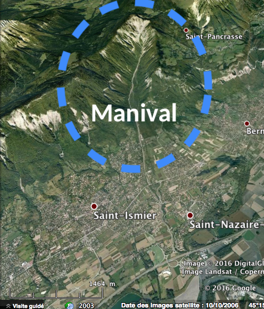
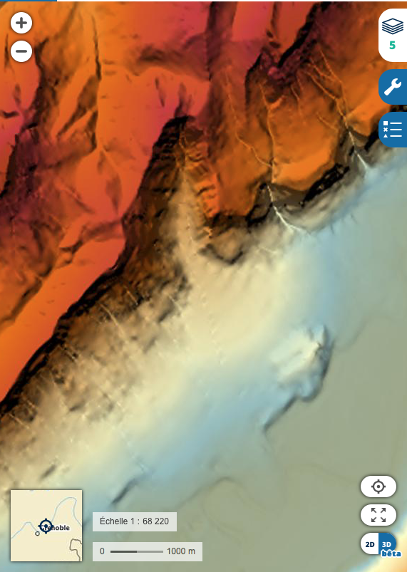

Retour
Page précédente
Page suivante
QCM : Les formations de versant - Auto-évaluation
Roches et Gravité: ça remue !
Votre navigateur ne supporte pas la lecture de cette vidéo.
1. De quel torrent, qui alimente l'un des plus grands cônes de déjection de France, est-il question dans cette vidéo ?
A) Du torrent de Minerval
B) Du torrent de Manival
C) Du torrent de Narval
D) Du torrent de Roseval
Commentaire:
Le torrent de Manival, situé dans le massif de la Chartreuse en Isère, est connu pour son cône de déjection spectaculaire, formé par l'accumulation de matériaux charriés lors de crues torrentielles.
2. Quelle est la quantité de matériaux qui a été retirée du chenal torrentiel de Manival en 25 ans ?
A) 50 000 m
3
de matériaux.
B) 500 000 m
3
de matériaux.
C) 500 m
3
de matériaux.
D) 5 000 m
3
de matériaux.
Commentaire:
Environ 50 000 m³ de matériaux ont été retirés du chenal torrentiel de Manival en 25 ans, témoignant de l'importance de l'entretien pour prévenir les risques d'inondation et de débordement dans cette zone sujette aux crues torrentielles.
3. Où se trouve le torrent du Manival ?

×
×
A) Sur le flanc Est du Massif de la Chartreuse, au Nord de Grenoble.
B) Au Nord du Massif du Vercors
C) Sur le flanc ouest du Massif de Taillefer
D) Sur le flanc Ouest du Massif de la Chartreuse
Commentaire:
Le torrent du Manival se situe dans le Massif de la Chartreuse, sur son flanc Est, et au Nord de Grenoble
4. Quelles sont les dimensions du cône de déjection de Manival ?

×
×
×
A) Un cône de déjection couvrant une zone de 4 km
2
.
B) Un dénivelé entre le haut et le bas de la zone d'accumulation des dépôts de l'ordre de 1000 m.
C) Un cône de déjection couvrant une zone de 10 km
2
.
D) Un dénivelé entre le haut et le bas de la zone d'accumulation des dépôts de l'ordre de 500 m.
Commentaire:
Le cône de déjection de Manival est caractérisé par un dénivelé de 500 m entre le haut de la zone d'accumulation (point côté autour de 800 m) et le bas de la zone d'accumulation (point côté autour de 300 m), et il s'étend sur une surface d'environ 4 km², faisant de lui l'un des plus grands cônes torrentiels en France.
5. Le Manival fait partie des torrents à
clappes
. Que signifie cette expression ?
A) Torrent gentil
B) Torrent à cailloux
C) Torrent intermittent
D) Torrent méchant
Commentaire:
Les torrents à clappes transportent principalement des matériaux rocheux et des cailloux, souvent d'importantes quantités lors des crues.
6. Dans un système torrentiel, comment s'appelle la partie en altitude, constituée de matériaux érodables et soumise à une érosion intense ?
×
A) Un ombilic
B) Un bassin d'érosion
C) Un gouffre
D) Un bassin de réception
Commentaire:
Le bassin de réception est la zone où l'eau et les matériaux issus de l'érosion se rassemblent avant d'être transportés dans le chenal torrentiel.
7. Quels sont les phénomènes les plus dangereux produit par un torrent comme le torrent de Manival ?
A) Des écoulements torrentiels
B) Des déferlantes torrentielles
C) Des laves torrentielles
D) Des nuées torrentielles
Commentaire:
Les laves torrentielles sont des coulées d'eau, d'argiles et de débris, souvent soudaines et extrêmement destructrices, pouvant emporter tout sur leur passage.
8. Quelle est la proportion d'eau dans ces laves torrentielles ?
A) 70 à 80 % d'eau
B) 5 à 30% d'eau
C) 10 à 20 % d'eau
D) 20 à 50 % d'eau
Commentaire:
Les laves torrentielles sont des mélanges de matériaux solides et d'eau, où la proportion d'eau (20 à 50 %) permet une fluidité suffisante pour générer des coulées rapides et destructrices. Les laves torrentielles contiennent donc 50 à 80% de matériaux.
9. Une lave torrentielle est un phénomène
A) qui se caractérise par un écoulement continu de matériaux boueux et homogènes
B) qui parfois, peut se manifester par une seule bouffée.
C) lent et continu, sans bouffées.
D) qui se caractérise par des bouffées se succédant les unes après les autres.
Commentaire:
Les laves torrentielles sont souvent irrégulières, alternant entre des bouffées puissantes et de courtes pauses. Elles résultent d'un mélange de matériaux hétérogènes et d'eau, dévalant les pentes à grande vitesse.
10. Par quel mécanisme (autre que les laves torrentielles), un torrent comme le torrent de Manival, transporte des matériaux vers le bas ?
A) L'épierrage
B) Le soutirage
C) Le charriage
D) La suspension
Commentaire:
Un torrent transporte des matériaux par charriage (roulement ou glissement des blocs sur le fond) et par suspension (les particules fines sont entraînées dans l'eau en mouvement). Ces mécanismes sont complémentaires et dépendent de la taille des matériaux et de la vitesse de l'eau.
11. Comment reconnaît-on les dépôts des charriage ?
A) Ce sont des dépôts très hétérométriques et mal classés.
B) Ce sont des dépôts qui peuvent renfermer des blocs de plusieurs dizaines de kg et plus.
C) Ce sont des dépôts plus homogènes granulométriquement, avec un spectre granulométrique couvrant les limons, sables, graviers et les cailloux.
D) Ce sont des dépôts qui deviennent très cohésifs après le ressuyage.
Commentaire:
Les dépôts de charriage sont plus homogènes en taille, avec une bonne répartition des matériaux, allant des plus fins (limons et sables) aux plus gros (graviers et cailloux), contrairement à d'autres types de dépôts plus hétérogènes.
12. Comment reconnaît-on les dépôts de laves torrentielles des torrents ?
A) Ce sont des dépôts qui deviennent très cohésifs après le ressuyage.
B) Ce sont des dépôts qui possèdent une matrice argileuse.
C) Ce sont des dépôts très hétérométriques et mal classés.
D) Ce sont des dépôts qui peuvent renfermer des blocs de plusieurs dizaines de kg et plus.
E) Ce sont des dépôts plus homogènes granulométriquement, avec un spectre granulométrique couvrant les limons, sables, graviers et les cailloux.
Commentaire:
Les dépôts de laves torrentielles sont caractérisés par une grande hétérogénéité, incluant des matériaux de tailles variées, une matrice argileuse, et souvent une cohésion accrue après dessiccation, avec des blocs lourds et volumineux présents dans les couches.
13. Quelle est la nature des roches érodées en altitude dans la zone d'alimentation du torrent de Manival ?
A) Des dolomies
B) Des micaschistes
C) Des schistes
D) Des marnes et des marno-calcaires
Commentaire:
Les marnes et marno-calcaires, présentes dans la zone d'alimentation du torrent de Manival, sont des roches tendres, facilement érodables, qui contribuent à l'alimentation en matériaux fins et argileux du torrent.
14. Quels types de dépôts de formations superficielles trouve-t-on dans le bassin d'érosion en altitude du torrent du Manival ?
A) Des cônes d'éboulis
B) Des moraines
C) Des cônes de déjection
D) Des grèzes litées
Commentaire:
Les cônes d’éboulis se forment par accumulation de matériaux grossiers, comme des blocs et graviers, issus de l’érosion mécanique des versants. Ils sont caractéristiques des zones en altitude, où la gravité transporte les débris en bas des pentes.
15. Quelle est la différence entre une crue torrentielle et une lave torrentielle ?
A) Une crue torrentielle transporte toujours des blocs de grande taille, contrairement à une lave torrentielle.
B) Une lave torrentielle est un mélange dense de matériaux solides (blocs, graviers, limons) et d'eau, se comportant comme un fluide visqueux.
C) Une crue torrentielle est un écoulement rapide d'eau, transportant des sédiments en suspension ou par charriage.
D) Une lave torrentielle est un phénomène exclusivement lié aux torrents alpins, alors que les crues torrentielles se produisent partout.
Commentaire:
Une crue torrentielle est dominée par le transport d’eau et de sédiments, tandis qu'une lave torrentielle est un mélange solide-liquide très dense, capable de déplacer de gros blocs et causant des dépôts mal classés.
16. À quoi reconnait-on des dépôts de front de lave torrentielle ?
A) Ces dépôts sont toujours composés exclusivement de fines particules argileuses.
B) Ce sont des dépôts en amas, très hétérométriques, contenant des blocs de grande taille
C) Ces dépôts présentent une structure chaotique, sans stratification marquée.
D) Ce sont des dépôts bien triés avec une granulométrie homogène.
Commentaire:
Les dépôts de front de lave torrentielle se caractérisent par un amoncellement de blocs grossiers, mal classés, avec une absence de tri granulométrique.
17. Quels dépôts sont les plus cohésifs ?
A) Les dépôts de charriage.
B) Les dépôts de laves torrentielles.
Commentaire:
Les dépôts de laves torrentielles sont très cohésifs en raison de leur matrice fine, souvent argileuse, qui durcit après ressuyage et qui lie les particules ensemble une fois le dépôt sec et compacté.
18. Pourquoi les habitants ont été attirés dans le passé par les terres des cônes de déjection comme le torrent de Manival ?
A) Parce que ces terres sont idéales pour l'urbanisation et la construction de maisons.
B) C'étaient des terres riches en bonnes pierres de construction.
C) Parce que ces terres sont riches en minéraux précieux.
D) C'étaient des terres fertiles, au-dessus des terres marécageuses de la vallée de l'Isère.
E) Parce que ces terres sont très stables et sûres.
F) C'étaient des terres propices à la culture de la vigne.
Commentaire:
Les cônes de déjection sont formés de matériaux transportés par les torrents, ce qui donne un sol fertile, idéal pour les cultures, notamment la vigne, et propice à l'agriculture en général.
19. Comment les habitants près d'un cône de déjection comme celui du torrent de Manival luttent pour limiter les problèmes ?
A) Engazonner les terres d'altitude pour limiter les effets du ruissellement.
B) Poser un géotextile au fond du chenal.
C) Construire des petits barrages transversaux et des seuils en pierre sèche
D) Construire une digue de plus de deux mètres de haut
Commentaire:
Les barrages et seuils en pierre sèche permettent de réduire la vitesse et l'énergie des écoulements torrentiels, réduisant ainsi les risques de laves torrentielles et d'érosion.
20. Comment traduire "laves torrentielles" en anglais ?
A) Debris flow
B) Mud flow
C) Rockslide
D) Landslide
Commentaire:
"Debris flow" est le terme utilisé pour décrire un écoulement rapide de matériaux solides (comme des graviers, des cailloux, et de la boue), similaire aux laves torrentielles.
21. Quel a été l'impact de l'homme sur les terrains de montagne dans le passé ?
Votre navigateur ne supporte pas la lecture de cette vidéo.
A) Lors des périodes historiques, les forêts ont toujours été préservées en montagne.
B) Au XVIe-XIXe siècle, il fallait produire du bois de chauffe pour les habitants, ainsi que fournir du bois aux manufactures, à la marine, etc.
C) C'est l'essor du charbon qui a sauvé les forêts françaises au XIXe siècle.
D) Au XIXe siècle, beaucoup de montagnes étaient dénudées, en raison de la déforestation intensive opérée au XVI-XVIIIe siècle.
Commentaire:
La déforestation a eu des conséquences sur la stabilité des terrains, augmentant le risque d'érosion et de glissements de terrain.
22. Est-ce que la politique de reforestation des terrains en montagne allait toujours de soi au XIXe siècle ?
A) Oui, car tout le monde était convaincu du bien-fondé de cette politique pour prévenir les dégâts dans les grandes villes (Lyon, ...).
B) Non, il y avait de fortes oppositions des habitants de la montagne et du "lobby" agro-pastoral.
Commentaire:
La reforestation a finalement été perçue comme essentielle pour prévenir l'érosion et maintenir la stabilité des terrains.
23. Est-ce que les aménagements (seuils en pierre sèche, reforestation) réalisés au début du XIXe siècle résistent bien au cours du temps ?
A) Oui, les ouvrages résistent bien.
B) Non, il faut toujours surveiller et réparer les ouvrages.
Commentaire:
Il faut toujours surveiller et entretenir.
24. Quel est l'impact d'un défaut d'entretien ?
A) Cela peut aussi mener à des érosions ou des obstructions dans les systèmes de drainage, ce qui augmente le risque d'inondations, de glissements de terrain ou d'autres phénomènes naturels dangereux
B) Un défaut d'entretien n'a pas d'impact significatif, car ces structures sont conçues pour être autonomes et ne nécessitent pas d'entretien.
C) Un défaut d'entretien des infrastructures de protection contre les risques naturels, comme les seuils en pierre sèche ou les systèmes de drainage, peut entraîner leur dégradation, réduisant ainsi leur efficacité
D) En montagne, un mauvais entretien des aménagements peut entraîner une augmentation de la vulnérabilité des biens et des personnes dans la vallée
Commentaire:
Le défaut d'entretien peut non seulement compromettre la sécurité des populations, mais aussi engendrer des coûts de réparation importants et des dommages environnementaux à long terme.
25. Quels sont les avantages des barrages transversaux en pierre sèche ?
A) Ils "cassent" l'énergie du courant
B) Ils permettent d'accélérer le débit des torrents.
C) Ils permettent de stabiliser les talus latéraux
D) Ils permettent d'engazonner les talus
E) Ils permettent de prévenir les éboulements latéraux
F) Ils permettent de remplacer complètement les digues en béton armé.
G) Ils empêchent totalement les laves torrentielles de se produire.
H) Ils permettent de réutiliser les grosses pierres à proximité
Commentaire:
Les barrages transversaux en pierre sèche sont une méthode efficace et écologique, car ils utilisent les matériaux disponibles sur place. Ils stabilisent les pentes latérales en limitant leur érosion et en favorisant leur végétalisation, tout en réduisant l'énergie des écoulements dans le chenal.
26. Est-ce que la population locale est consciente du danger du torrent du Manival et de la nécessité de ces travaux de protection ?
A) Oui, car l'histoire locale est marquée par des épisodes destructeurs liés au torrent.
B) Non, ces travaux sont souvent jugés inutiles et coûteux.
C) Non, car la mémoire humaine est courte.
D) Non, la population considère que le torrent ne représente aucun danger.
E) Oui, les travaux de protection sont perçus comme essentiels pour limiter les risques.
Commentaire:
Bien que certains habitants soient conscients des risques liés au torrent et de l'importance des travaux, d'autres sous-estiment ces dangers, influencés par une mémoire collective parfois limitée et court-termiste.
Corriger
Recommencer